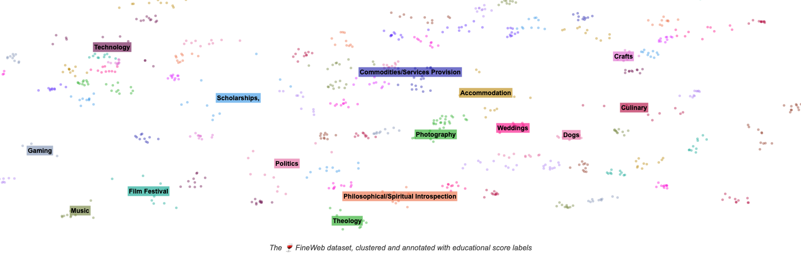
大型语言模型（LLM）的性能在很大程度上取决于其预训练数据集的质量与规模。
然而，像 Llama 3
Recently, we released 🍷 FineWeb, a new, large-scale (15-trillion tokens, 44TB disk space) dataset for LLM pretraining. FineWeb is derived from 96 CommonCrawl snapshots and produces better-performing LLMs than other open pretraining datasets. To bring more clarity in machine learning and advance the open understanding of how to train good quality large language models, we carefully documented and ablated all of the design choices used in FineWeb, including in-depth investigations of deduplication and filtering strategies. The present long form report is a deep dive in how to create a large and high-quality web-scale dataset for LLM pretraining. The dataset itself, 🍷 FineWeb, is available here.
在本报告中，我们还介绍了 📚 FineWeb-Edu，它是 FineWeb 的一个子集，通过可扩展的自动化高质量教育价值标注构建而成，并在 MMLU、ARC 和 OpenBookQA 等多项教育类基准上优于所有公开可获取的网页数据集。
📚 FineWeb-Edu 提供两种规模/过滤级别：1.3 万亿（教育内容极高）与 5.4 万亿（教育内容高）token（所有 token 均以 GPT2 分词器计量
两个数据集均以宽松的 ODC-By 1.0 许可发布
TLDR：本博文讨论大规模数据处理与数据质量评估、🍷 FineWeb 的配方（列出并解释我们的全部设计选择），以及创建其 📚 FineWeb-Edu 子集所遵循的流程。
网页数据
寻找原始数据
关于用于训练 LLM 的网页数据集，一个常被问起的问题是“他们到底从哪里弄到所有这些数据的？”。通常有两种选择：
- 要么使用公开的已抓取网页仓库，例如由非营利组织 CommonCrawl 维护的仓库
为了构建 🍷 FineWeb，我们沿用过去许多 LLM 训练团队的做法，以 CommonCrawl（CC）为起点。 Common Crawl 这家非营利组织自 2007 年起持续抓取网络，通常每 1 或 2 个月发布一次新的抓取，其中包含通过自动网页抓取获得的 200 至 400 TiB 文本内容。
举例来说，最新的 CC 抓取（2024 年 4 月）包含
27 亿个网页，未压缩 HTML 文本内容总计 386 TiB
大规模处理
鉴于所涉及数据的庞大规模，我们必须克服的主要挑战之一， 是拥有一套模块化、可扩展的代码库，使我们能够快速迭代 各种处理决策、轻松尝试新想法，同时恰当并行化工作负载， 并对数据提供清晰的洞察。
为此，我们开发了 datatrovedatatrove 仓库中找到我们使用的确切脚本。
什么是好的数据？
这或许是在创建数据集时需要始终牢记的核心问题。在大多数语境下，尤其是大型语言模型预训练的语境下
一种仍然常见的做法是，在某个被视为“干净”的语料库
（通常是 wikipedia
还有一种比较不同数据集的方法是，
在每个数据集上各训练一个模型，让人工对模型的生成结果进行评分和比较（就像在 LMSYS Chatbot Arena 上那样）
在本工作中，我们采用的方法是训练小模型， 并在一组“早期信号”基准任务上对它们进行评估。我们认为，在牢记上文提到的评测基准过拟合风险的前提下，这是衡量用于训练这些模型的数据质量的一个合理代理指标。
消融实验与评测设置
为了比较某个处理步骤的影响，我们在数据集的两个版本上分别训练两个模型，一个版本应用了额外步骤（即我们希望评估的步骤），另一个版本则消融（切除/移除）了该步骤。除数据之外，这两个模型在其他方面完全相同：相同的参数量、架构超参数，并在各自数据版本中随机采样的等量 token 上训练 一个 epoch——因此唯一的差别就是训练数据。随后我们在同一组任务上评估每个模型，并比较平均 得分。
我们的消融模型使用 nanotron 训练。我们的“消融模型”有 18.2 亿参数（含嵌入），采用 Llama
架构，序列长度为 2048，全局批大小约为 200 万 token，并使用 GPT2 分词器。对于大多数
消融实验，我们训练了约 280 亿 token（大致相当于该模型规模下 Chinchilla
我们使用 lighteval 对模型进行评测。为挑选用于消融实验的一组基准，我们做了仔细的筛选：
所选基准应能在相对较小的规模下（仅在“几十亿”token 上训练的“小”模型）提供良好的信号。在 lighteval 提供的全部基准中，我们通常依据以下标准进行选择：
- 同一数据集的不同采样上训练出的多次运行之间方差较小： 我们希望基于数据子集的运行能够代表整个数据集，并且所得到的分数在尽可能的限度内，对具体数据点选择的敏感程度低于对过滤器效果的敏感程度
- 在一次训练运行中性能单调提升（或接近单调）： 理想情况下，随着已见 token 数量的增加，高信号基准上的性能不应下降（若下降，则说明小规模下的结果不可靠）
- 在该任务上的性能至少比随机基线高出几个标准差：鉴于我们的消融模型规模小、训练量也小，通常无法在任何基准上取得极高的分数，但我们希望确保所得到的分数高于随机噪声。
经过考虑，我们选定了以下基准列表：
- CommonSense QA
- HellaSwag
- OpenBook QA
- PIQA
- SIQA
- WinoGrande
- ARC
- MMLU
为确保检查点评测控制在有限的时间范围内，我们将较长的基准限制在 1000 个样本（在 8 张 GPU 的单个节点上，实际耗时评测不到 5 分钟——与训练并行进行）。
🍷 FineWeb 配方
在接下来的小节中，我们将解释生成 FineWeb 数据集所采取的每一个步骤。
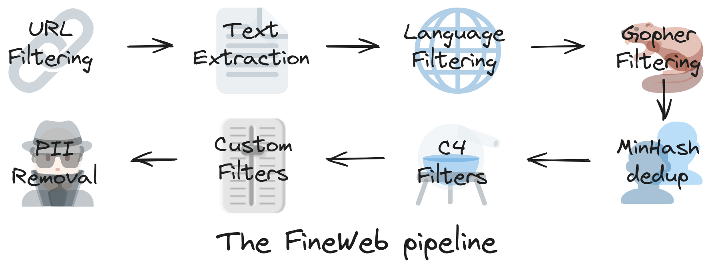
起点：文本抽取
CommonCrawl 数据主要以两种格式提供：WARC 与 WET。WARC （Web ARChive 格式）文件包含抓取的原始数据，包括 完整的页面 HTML 和请求元数据。WET（WARC Encapsulated Text）文件则提供这些网站的 纯文本版本。
大量数据集以 WET 文件作为
起点。根据我们的经验，Common Crawl 为生成这些 WET 文件而使用的默认文本抽取，对于 LLM 预训练的目标而言并不理想
为验证这一决定，我们直接使用 WET 文件处理了 2019-18 转储，
同时也处理了用 trafilatura 从 WARC 文件中抽取的文本favour_precision=True。
不过需要指出，文本抽取是我们 处理流程中成本最高的步骤之一，因此我们认为，对预算较低的团队而言，使用现成的 WET 数据 可能是一种合理的取舍。
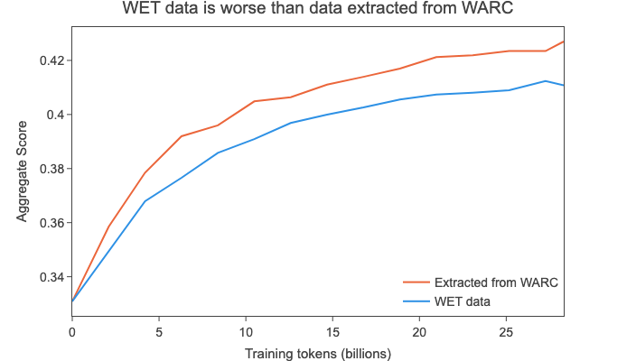
基础过滤
过滤是数据整理流程中的重要一环。它指的是 移除部分会降低模型性能的数据（可以是词、行，甚至整篇文档）；在我们以评测驱动的数据集构建过程中，这些数据 被视为“质量较低”。
作为过滤的基础，我们采用了
RefinedWeb
- 使用黑名单进行 URL 过滤，以移除成人内容
- 应用 fastText 语言分类器
， 仅保留得分 ≥ 0.65 的英文文本
- 应用 MassiveText
的质量过滤器与重复过滤器（使用默认阈值）
对每个文本抽取后的转储（目前共有 96 个转储）应用上述过滤后，
我们获得了约 36 万亿 token 的数据gpt2 分词器分词后的 token 数量
对数据去重
在为 LLM 预训练构建大规模网页数据集时，去重是最重要的步骤之一。数据集去重方法试图识别并移除数据集中冗余/重复的数据。
为什么要去重？
网页上存在大量聚合站、镜像站、模板化页面，或仅仅是散落在 不同域名和网页上的其他重复内容。有时，当不同的链接指向同一个页面时，这些重复页面 甚至可能是由抓取器自身引入的。
移除这些重复项（去重）与模型性能的提升
识别乃至定义重复数据有多种方式。常见做法依赖哈希技术
来加速处理，或构建高效的数据结构来索引数据（例如后缀数组）。方法也可以是“模糊”的，
即用某种相似度度量把文档标记为重复项；或是“精确”的，即检查两篇文档（或行、段落，
以及所使用的任何其他粒度层级）之间是否完全匹配
我们的去重参数
参照 RefinedWeb
这意味着，对于相似度（s） 分别为 0.7、0.75、0.8 和 0.85 的两份文档，它们被判定为重复项的概率将分别为 56%、77%、 92% 和 98.8%（1-(1-s^8)^{14}）。下图比较了我们的方案（112 个哈希）与 RefinedWeb 的方案（9000 个哈希，划分为 450 个桶、每桶 20 个哈希；这需要多得多的计算资源，因为每个哈希都必须被计算、存储，然后与其他文档的哈希进行比较）之间的匹配概率：
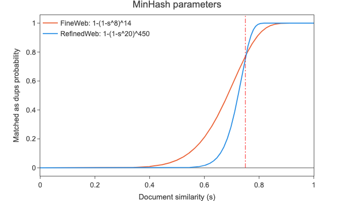
尽管 RefinedWeb 中大量的哈希函数能带来更陡峭、更明确的截断（真实相似度接近阈值的文档更有可能被正确识别），但我们认为在计算和存储上的节省是合理的 取舍。
还应指出，文档内部去重已由我们的重复过滤器处理，该过滤器会移除包含大量重复行和段落的文档。
去重越多总是越好，对吧？
起初，我们的出发点是一个假设：去重越多总是越好，因此我们的第一种做法是把整个数据集（全部 90 多个转储）当作一个大数据集，用 MinHash 一起去重。
我们以迭代方式进行：从最新的 转储（当时是 2023-50）开始，按时间顺序推进，直到最古老的抓取。我们对每个转储 不仅在自身内部去重，还会移除任何与先前已处理转储中其他文档相匹配的文档。
例如，对于第二新的转储（当时是 2023-40），我们除了在它自身内部去重，还将其与最新的转储进行比对去重。结果是，转储越旧，与之比对去重的转储 数量就越多，从中移除的数据也越多（确实，在最古老的转储中，去重步骤移除了基础过滤后数据 90% 以上的部分）。
以这种方式对数据集去重，得到 4 万亿 token 的数据，但令我们相当意外的是，在随机采样的 3500 亿 token 子集上训练时，我们的消融模型相较在未去重数据上训练的模型几乎看不到提升，在我们的任务聚合上得分远低于其前身 RefinedWeb（见下图）。
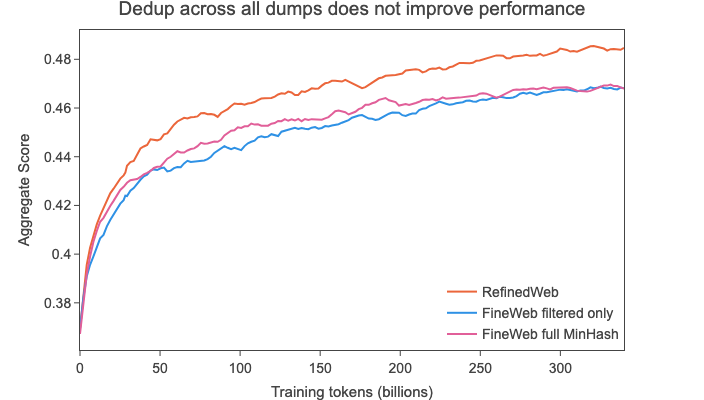
这动摇了我们“去重越多，基准得分必然越高”的假设，因此我们决定仔细考察最古老的转储之一——2013-48 转储：
- 去重前，该转储约有 4900 亿 token
- 经过我们的迭代式 MinHash 之后，剩下约 310 亿 token（94% 的数据被 移除）
作为实验，我们尝试用从 2013-48 的下述数据中采样的 280 亿 token 训练两个模型：
- 完全去重后剩余的约 310 亿 token（原本保留 的数据）
- 通过单独去重（不考虑其他
转储）在迭代去重过程中从该转储里移除的约 4600 亿 token 所得到的 1710 亿 token（原本被移除的数据）
尽管原本保留 的数据中可能存在与原本被移除的数据相似的文档，但我们估计重叠很小（约 40 亿 token）
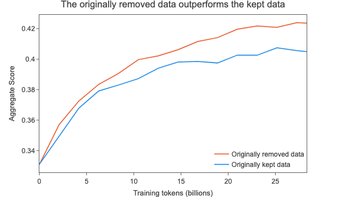
这些结果表明，对于这个单独考察的较旧转储，保留下来的数据（原始数据的 10%）实际上比我们
移除的那 90% 数据更差
退一步看：单个转储去重
我们决定尝试另一种方法：用 MinHash 对 每个转储单独去重（独立于其他转储）。这样得到 20 万亿 token 的数据。
在该数据集中随机采样训练后，我们看到 它如今已与 RefinedWeb 的性能相当（见下方曲线）：
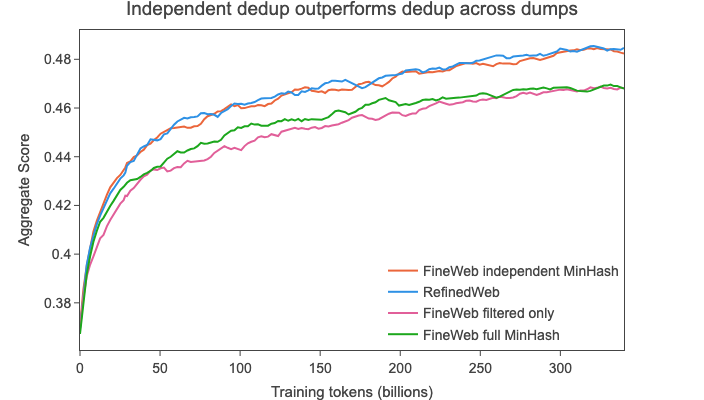
我们推测，去重带来的主要改进 在于移除了每个转储中都存在的超大规模簇（你可以在 RefinedWeb 论文中找到这类簇的一些例子，每个簇包含数十万份 文档），而对重复项数量较少的簇（少于约 100，即转储 的数量）做进一步去重实际上会损害性能：在其他任何转储中都找不到重复匹配的数据，可能 质量更差、更偏离分布（2013-48 数据上的结果即为证据）。
虽然在将少数几个转储放在一起去重时，你可能会看到一些 性能提升，但在整个数据集（所有转储）的规模上，这种对低质量数据上采样的 副作用所带来的影响似乎更大。
有一种可能性值得考虑：随着过滤质量 提升，这一效应可能不再那么普遍，因为过滤或许能移除其中一些 低质量数据。我们还尝试在单独去重后的各转储之上，应用不同的、通常“更轻量”的去重 方法。你可以在下文进一步了解这些方法。
关于衡量去重效果的一点说明
鉴于去重的性质，其效果 在数据集较小的一部分（例如 280 亿 token，即我们用于 过滤消融实验的规模）中并不总是很明显。此外，还必须考虑到，在跨所有 CommonCrawl 转储去重时 会有一些特定效应在起作用，因为某些 URL/页面会在相邻转储中被重新抓取。
为了直观展示训练 token 数量规模变化对衡量去重影响的作用，我们设想了以下（就观察到的重复程度而言极为极端且不现实）理论 情景：
- 共有 100 个 CommonCrawl 转储（大致准确）
- 每个转储都已完美地单独去重（该转储中每一份 文档都唯一）
- 每个转储都是彼此的完美副本（跨转储的重复达到 最大可能程度，实际上就是最坏情况）
- 每个转储有 2000 亿 token（总计 20 万亿，即我们 上文单独去重后得到的规模）
- 每个转储由 1k token 的文档构成（每个转储 2 亿份文档）
随后我们模拟从这整个 20 万亿 token 的数据集中均匀采样文档，以得到 1B、10B、100B、350B 和 1T token 的子集。在下图中 你可以看到每份文档被重复的次数。
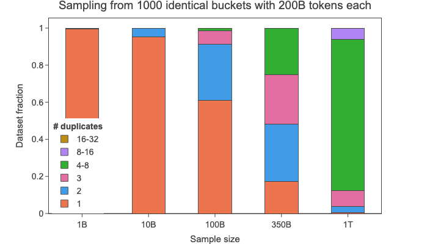
在 1B 规模下，几乎所有文档都会是唯一的 （#duplicates=1），尽管在整个数据集中每份文档都重复了 100 次（每个转储 一次）。到 100B 规模（占整个数据集的 0.5%）时，我们开始看到一些变化， 大量文档重复两次，少数甚至重复 4–8 次。在更大的 1T 规模（占整个数据集 的 5%）下，大多数文档重复最多 8 次，有些重复最多 16 次。
我们在 350B 规模上对去重后的 数据进行了性能评测；在这一理论情景下，该规模的数据中将有相当一部分是 重复最多 8 次的文档。这一模拟说明了，一旦最大的重复簇 被移除，衡量去重对 LLM 训练的影响本身就有多困难。
其他（失败的）全局方法
在我们新发现的方法（独立地对每个转储去重）的基础上继续推进。我们试图通过用其他全局（覆盖所有转储）去重方法对 经独立 MinHash 去重后的 20 万亿 token 数据做进一步去重，来提升性能。我们探索了以下方法：
- URL 去重，每个归一化（转为小写）后的 URL 只保留一个文档（移除 71.5% 的 token，剩余 5.6T）—— FineWeb URL 去重
- Line deduplication:
- 对每个重复行，只保留 1 次（随机选取的）出现，其余全部移除（丢弃 77.8% 的 token，剩余 4.4T）—— FineWeb 行去重
- 同上，但只移除至少 10 个词的重复行，并在去重后丢弃少于 3 个句子的文档（丢弃 85% 的 token，剩余 2.9T）—— FineWeb 行去重（含最小词数限制）
- 对每个 3 行重复片段，只保留 1 次出现，查找重复时将每个数字都视为 0，（移除 80.9% 的 token，剩余 3.7T）—— FineWeb 3 行 去重
用其中每一种数据训练的模型，性能都始终不如原始独立去重后的数据（尽管差距程度 不同）：
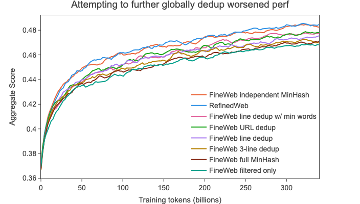
额外的质量过滤
到这一步，借助我们的基础过滤和独立 MinHash，我们已达到了试图复现并扩展的先前工作
RefinedWeb 的同等性能。不过，在我们的任务聚合结果上，另一个经过重度过滤的数据集 C4
因此我们着手寻找新的过滤步骤，首先让我们追平 C4 的性能，第二阶段再超越它。一个自然的起点 是研究 C4 自身的处理流程。
C4：一个经受住时间考验的数据集
C4
数据集于 2019 年首次发布。它取自 2019-18 CommonCrawl 转储，处理方式是
移除非英语数据、在行级和文档级应用若干启发式过滤器、在行级去重，以及移除包含词黑名单中词汇的文档。
尽管以当前标准看它问世已久、规模也有限（约 175B 个 gpt2 token），但时至今日，该数据集仍是典型 LLM 训练中的常见子集，被用于相对较新的 Llama1
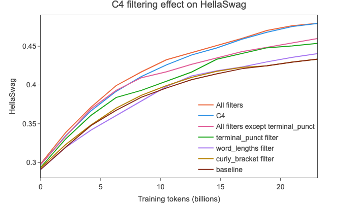
- 应用“全部过滤器”（丢弃不以标点符号结尾的行、提及 javascript 和 cookie 提示的行 + 丢弃长度超出阈值、包含“lorem
ipsum”或花括号
{的文档）使我们追平了 C4 的 HellaSwag 性能（分别为“All filters”和“C4”曲线）。
- 花括号过滤器和词长过滤器只带来小幅 提升，分别移除 2.8% 和 4.3% 的 token
- 句末标点过滤器单独使用时带来的提升最大，但会移除全部 token 中的 约 30%（！）
- lorem_ipsum、javascript 和 policy 规则各自移除的训练 token 都 <0.5%， 因此我们没有单独用它们训练
- “除（破坏性很强的）terminal_punct 之外的全部过滤器”比单独使用 terminal_punct 表现更好，同时总移除量更少（约 7%）
我们决定应用上述除句末标点过滤器之外的所有 C4 过滤器。我们用一次更长的运行验证了这些结果，你可以在 下一节的一张图中看到。
用统计方法开发启发式过滤器
为开发新的启发式过滤器并选定其阈值，我们设计了一套系统化流程：
- 我们首先收集了一份非常庞大的数据集高层统计指标清单（超过 五十 种不同的度量），范围从常见的文档级 指标（如行数、平均行/词长度等）到文档间重复度量（受 MassiveText 启发），并同时在高质量和较低质量的网页数据集上计算；
- 我们挑出这样一些度量：两种分布（即该度量分别在两个数据集上算出的分布）之间的 Wasserstein 距离更大；
- 我们查看两种分布的直方图，并凭经验选择一个阈值，使较低质量的数据集在该度量上更接近较高质量的数据集；
- 我们将得到的过滤器（度量-阈值对）用在参考数据集上，并运行小规模消融实验来验证。
由于我们（新提出）的假设是全局 MinHash 会大幅上采样最旧转储中的低质量数据，我们在 2013-48 和 2015-22 抓取（两次较旧的抓取）的 独立 MinHash 版本和（质量更差的）全局 MinHash 版本上都计算了度量。随后我们从宏观 层面比较统计量，即查看这些度量在每一个版本上的分布。
考虑到我们在去重方面的发现，这或许并不太令人意外：我们发现两种去重方法在大多数度量上都有
显著差异。例如，line-char-duplicates 度量（重复行中的字符数 / 字符总数）从独立去重的
0.0053（2015-22）和 0.0058（2013-48），大致翻倍至全局去重的 0.011（2015-22）和 0.01（2013-48），
这表明后者的文档间重复程度更高。
对这些数据集按上述流程执行，得到了 十七 个候选的 度量-阈值对。在下图中，你可以看到其中三个直方图：
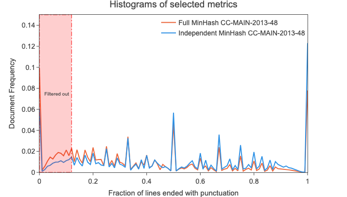
举例来说，我们查看了“以标点结尾的行所占比例”的直方图（见上图），观察到全局 MinHash 在 0.12 附近的文档密度升高。 随后我们用该阈值过滤，发现被移除的数据中短列表更多，或者仅由页面布局文本（“Home”“Sign up”等）构成。
接着我们通过在 2019-18 抓取上进行多次 280 亿 token 的消融实验运行，评估这十七个新建 过滤器的效果。在所有这些运行中，我们找出对聚合得分提升最显著的 三个 过滤器（即基于上述直方图的那些）：
- 移除以标点结尾的行所占比例 ≤ 0.12 的文档 （移除 10.14% 的 token）—— 相比原始 C4 句末标点过滤器的 30%
- 移除重复行中字符所占比例 ≥ 0.1 的文档 （移除 12.47% 的 token）—— MassiveText 中该比例的原始阈值为 ≥ 0.2
- 移除长度短于 30 个字符的行所占比例 ≥ 0.67 的文档（移除 3.73% 的 token）
- 三者同时应用时，约 22% 的 token 被移除。
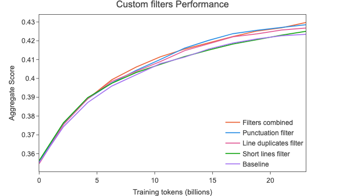
这些过滤器让我们进一步提升了性能，尤其值得一提的是超越了 C4 数据集的性能，同时还能提供大得多的数据集。
最终的 🍷 FineWeb 数据集
最终的 🍷 FineWeb 数据集包含 15T 个 token， 并依次包含以下先前提到的步骤，每一步都为我们这组基准任务带来了性能提升：
- 基础过滤
- 对每个转储独立进行 MinHash 去重
- 一组选定的 C4 过滤器
- 我们自定义的过滤器（在上一节中提到）
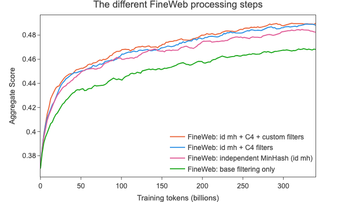
与其他网页规模数据集的比较
我们把 🍷 FineWeb 与以下通常被视为公开可获取的最高质量网页规模数据集进行了比较（我们还标注了每个数据集公开版本中 token 的大致数量）：
- RefinedWeb（500B 个 token）
- C4（172B 个 token）
- Dolma v1.6（3T 个 token）（其中的
CommonCrawl 部分）
Dolma 有更新的版本 v1.7，规模更小
- The Pile（340B 个 token）
- SlimPajama（627B 个 token）
- RedPajama2（20T 个 token）
（已去重）
- 以及我们新的 🍷 FineWeb（15T 个 token）（本报告）
用 350B token 训练出的消融模型已公开发布，并汇集在这个 合集中。我们上传了每 1000 个训练步的检查点。你还可以在这里 查看我们的完整评测结果。
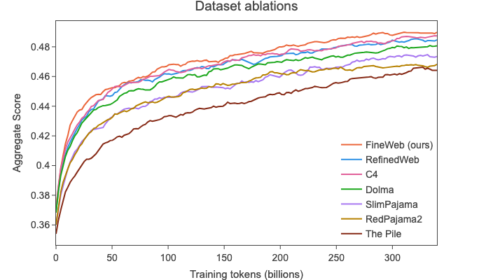
因此，据我们所知，🍷 FineWeb 是当前能带来最高模型性能、同时允许在数万亿 token 上训练的开放数据集。
📚 FineWeb-Edu
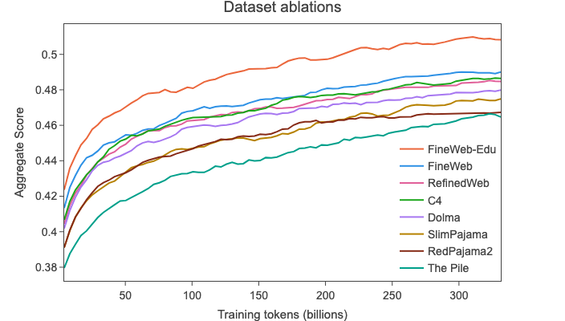
📚 FineWeb-Edu 是 FineWeb 的进一步开发成果，我们很高兴在本技术报告中介绍它并公开释出。📚 FineWeb-Edu 基于一种近期出现的、用于过滤 LLM 训练数据集的新方法：利用合成数据开发分类器，以识别教育内容。这项技术尤其被用于 Llama 3
广受欢迎的 Phi3 系列模型分别在 3.3 万亿与 4.8 万亿 token 上训练，论文
我们的训练数据由两部分组成：来自多个开放互联网来源、经过严格过滤（依据“教育水平”）的公开网页数据，以及 LLM 生成的合成数据。
类似地，Llama 3 的博客文章
我们发现前几代 Llama 擅长识别高质量数据，因此我们借助 Llama 2 来构建支撑 Llama 3 的文本质量分类器。
然而，这些分类器与过滤后的数据集并未公开。为进一步提升 🍷 FineWeb 的质量，我们利用 Llama-3-70B-Instruct 生成的标注开发了一个教育质量分类器，并以此构建了 📚 FineWeb-Edu。
大规模标注教育质量
我们使用 Llama-3-70B-Instruct 对来自 🍷 FineWeb 的 50 万个样本进行标注，按 0 到 5 的刻度为每个样本的教育质量打分。
我们尝试了多种提示词格式，以借助 LLM 自动提取教育分数，发现 Yuan 等人

在用于标注数据的开放权重模型方面，我们试验了多个模型，包括 Mixtral-8x7B-Instruct 与 Mixtral-8x22B-Instruct、Llama-3-70B-Instruct，以及一个汇总这三个模型分数的评审团
训练分类器
为把标注扩展到 FineWeb 的数万亿 token 上，我们用 Llama3-70B 的标注训练了一个小型分类器。所用模型是 Snowflake-arctic-embed 嵌入模型，并在其之上加了一个分类头，输出单个回归值。我们用 45 万条 Llama 3 标注训练该模型 20 个 epoch，学习率 3e-4，并冻结嵌入层与编码器层。我们以 Llama 3 标注为真值，在 4.5 万样本的留出验证集上保存 F1 分数最高的检查点。训练完成后，我们把分数取整为 0 到 5 的整数。
之后，我们用一个固定阈值判断文件是否具有教育性，从而把问题转化为二分类任务。阈值取 3 时，模型在验证集上取得 82% 的 F1 分数，表明其在区分高质量教育内容方面表现出色。
分类器见：HuggingFaceFW/fineweb-edu-classifier。训练与推理代码见 GitHub。
过滤与结果
我们将分类器应用于 🍷 FineWeb 的 15 万亿 token，这一过程耗费 6,000 H100 GPU 小时。我们考察了过滤时采用不同阈值的影响，发现阈值取 3 时总体结果最佳。尽管高于 3 的阈值能提升知识密集与推理密集基准上的表现，却会显著拉低 HellaSwag 与 PIQA 上的表现。下图展示了在六个不同基准上各阈值相对于 FineWeb 的表现；图中使用的是一个在 80 亿 token 上训练的 1.82B 模型。
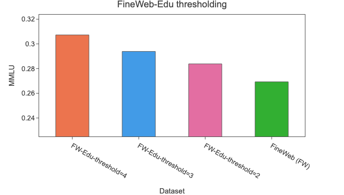
注意：本消融实验基于 2024-10 转储的 80 亿 token，FineWeb 与 FineWeb-Edu 子集均如此，可能无法代表整个数据集。下一项消融实验表明，阈值 3 的结论在所有 FineWeb 转储的 3500 亿 token 的更长运行中依然成立，唯一例外是 HellaSwag，我们注意到其性能略有下降。
我们通过剔除分数低于 3 的样本构建了 📚 FineWeb-Edu。这移除了数据集的 92%，留下 1.3 万亿教育类 token。为在更大规模上评估该过滤的有效性，我们开展了一项消融实验，使用一个在 3500 亿 token 上训练的 1.82B 模型，与上文提到的 FineWeb 过滤消融实验类似：
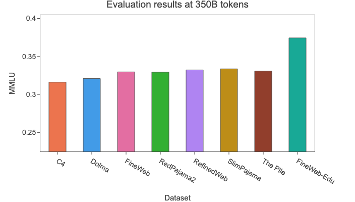
以下是上述消融结果的关键要点：
- 📚 FineWeb-Edu 优于 🍷 FineWeb 以及所有其他开放网页数据集，在 MMLU、ARC 和 OpenBookQA 等教育类基准上提升显著。
- 它以显著更少的数据达到同等性能：在 MMLU 结果持平的情况下，所需 token 比 C4 和 Dolma 少 10 倍。
- 这证明了使用基于 LLM 标注训练的分类器进行大规模数据过滤的有效性。
鉴于阈值 2 同样展现出强劲性能且保留了更多数据，我们额外发布了一个按该阈值过滤的数据集，包含 5.4 万亿 token，位于 HuggingFaceFW/fineweb-edu-score-2。
两个数据集以及过滤所用的分类器都收录在这个 collection 中。
附赠：CommonCrawl 随时间的变化
正如上好的葡萄酒，并非所有抓取都生而平等。
在消融各个过滤步骤时，我们注意到某些抓取以明显优势胜过其他抓取。我们决定调查这一现象。
各抓取的基准表现
对每次抓取，我们在从该抓取数据中随机抽取的 270 亿 token 上训练两个 1.8B 模型（数据已 经过基础过滤与 MinHash 去重步骤），其中每次运行使用不同的随机 270 亿 token 采样。我们共训练了 192 个这样的模型，总计超过 6 万 H100 GPU 小时。随后我们取 两次运行各自最后 3 个检查点，并绘制每次抓取这 6 个数据点的平均值。
下图清楚显示，某些转储的表现远 逊于其他转储。每一年用不同颜色表示，每年的抓取数量也各不相同。
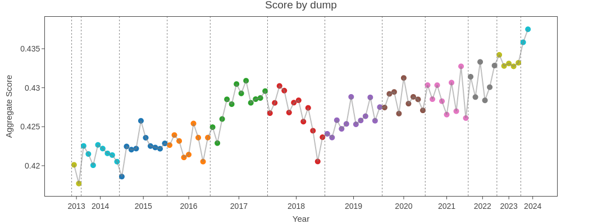
我们调查了这一现象的可能原因，例如每次转储中最常见 URL 的变化，以及潜在的基准污染，但未能找到任何确凿解释。进一步的调查留待未来工作。
合成数据
我们想知道，最近几次抓取的强劲表现是否部分归因于其中存在更多合成数据（由 LLM 生成的数据）。考虑到 LLM 近期人气上升，尤其是 ChatGPT，这种变化并不令人意外。
由于据我们所知，尚无万无一失的合成数据检测方法，我们选择使用代理指标：我们统计了
以下词语在每次抓取中的出现频率："delve", "as a large language model", "it's important to note", "rich tapestry",
"intertwined", "certainly!", "dive into"，这些都是 ChatGPT 常用的表达。
需要指出，并非所有含上述短语的样本都一定由 ChatGPT 生成（同样，许多由 ChatGPT 生成的样本 也不含其中任何短语）；但若假设合成数据量在各次抓取之间不变，那么这些频率理应随时间大致保持恒定。
结果如下图所示：
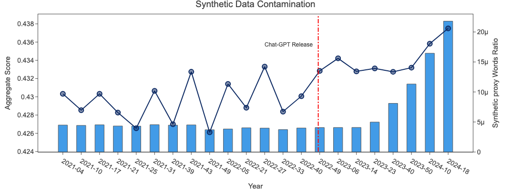
该频率在 2023-14 之前基本保持恒定（ChatGPT 于 2022 年底发布），但我们发现近期的抓取中该代理指标急剧上升。虽然这个简单的测试不足以断定 ChatGPT 补全和其他合成数据正在提升最新抓取的质量，但至少它似乎并未大幅损害质量。
我们预计在新的 CC 抓取中会持续看到数量不断增长的合成数据。然而，尽管对于相对小规模的训练而言这些数据似乎不会损害性能（实际上可能还会提升性能），但对于规模大得多的训练是否仍然如此，目前尚不清楚。
结论与展望
通过我们的开放科学努力，我们希望持续为高性能大语言模型训练这一黑箱带来光亮，并让每位模型训练者都有能力构建最先进的 LLM。我们很高兴能继续迭代 FineWeb，以完全开放且可复现的方式发布过滤得越来越好的网页数据子集。
短期内，我们期待将（英文）FineWeb 的经验应用到其他语言。尽管英语目前主导着 LLM 领域，但我们相信，尽可能让其他语言的高质量网页数据易于获取将产生巨大影响。
简而言之：对于大规模、开放式地研究数据集构建这门科学而言，未来光明而令人兴奋 🤗。